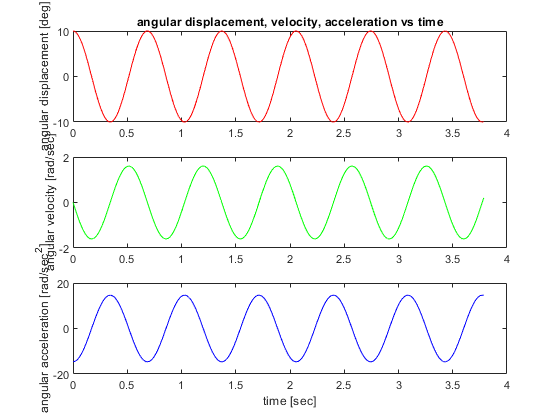
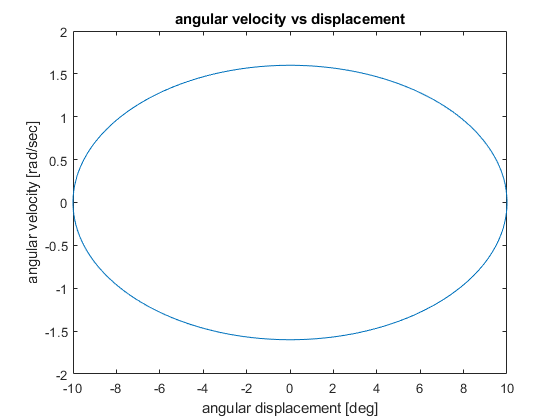
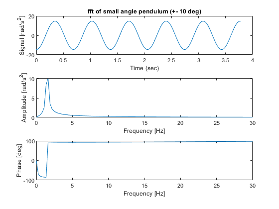
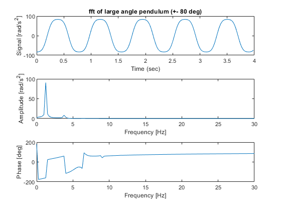

Contents
Problem 1
clc,clear,close all data = load('Pendulum.dta'); data_large = load('Pendulum_large.dta'); t = data(:,1); theta = -(data(:,2) - 270); thetadot = -data(:,3) * (pi/180); thetadotdot = -data(:,4) * (pi/180); t_large = data_large(:,1); thetadotdot_large = -data_large(:,4) * (pi/180); %period of oscillation calculation from notes m = .46; %lbm a = 3.7; %in JG = 1.5; %lbm*in^2 g = 386.08858267717; %in/s^2 tau = sqrt((4*pi^2)*(JG + m*a^2)/(m*g*a)); tau_graph = 1.02933 - .344; %sec fprintf('The period of oscillation calculated from Notes 07_03 is %.3f seconds.\n',tau) fprintf('The period of oscillation calculated from the graph %.3f seconds.\n',tau_graph) %Plot data figure(1) subplot(3,1,1) plot(t,theta,'r') ylabel('angular displacement [deg]') title('angular displacement, velocity, acceleration vs time') subplot(3,1,2) plot(t,thetadot,'g') ylabel('angular velocity [rad/sec]') subplot(3,1,3) plot(t,thetadotdot,'b') ylabel('angular acceleration [rad/sec^2]') xlabel('time [sec]')
The period of oscillation calculated from Notes 07_03 is 0.684 seconds. The period of oscillation calculated from the graph 0.685 seconds.
Problem 2
figure(2) plot(theta,thetadot) xlabel('angular displacement [deg]') ylabel('angular velocity [rad/sec]') title('angular velocity vs displacement')
Problem 3
do fft
% read time domain data here % must also define time step h % alternately create synthetic signal for testing % synthetic - 30 Hz sine, +/- 5 mm, 0.001 sec time step h = 0.0013; % time step [sec] % f_synthetic = 30; % synthetic frequency [Hz] % x_max = 5; % size synthetic signal [mm] % t2 = [ 0:(1999) ]' * h; % synthetic time [sec] % x = x_max * sin( 2 * pi * f_synthetic * t2 ); % synthetic signal [mm] % bottom - creating synthetic signal % synthetic square wave %x = sign( x ); % find number of samples and sampling frequency n = length( thetadotdot ); % number of samples fs = 1 / h; % sampling frequency [Hz] % FFT % MATLAB FFT must be scaled by 2/n - DC component must be scaled scaled by 1/n a = fft(thetadotdot) * 2 / n; % complex number - units [mm] a(1) = a(1) / 2; % offset at frequency of 0 Hz [mm] a(end) = a(end) / 2; amp = abs( a ); % amplitude at each frequency [mm] phase = angle( a ) * 180 / pi; % phase angle [deg] df = fs / n; % frequency resolution between spectral bands [Hz] freq = [ 0:(n-1) ]' * df; % all frequencies [Hz] % find peaks and list [ peaks, i_locations ] = findpeaks( amp, 'MinPeakHeight', 0.1 ); % ignore tiny values disp( ' ' ) disp( ' freq [Hz] peak [rad/sec^2]' ) disp( [ freq(i_locations) peaks ] ) % units [Hz] [mm] % plot time domain, amplitude, phase %Determine natural frequency from fft using peak i location wn = freq(i_locations(1)); fprintf('The peak amplitude of the +- 10 deg signal occurs around %.3f Hz which would be the signal''s natural frequency\n',wn) tau_fft = 1/wn; fprintf('The period of oscillation of the +- 10 deg signal determined from the fft would be %.3f sec\n',tau_fft) figure( 3 ) subplot( 3,1,1 ) plot( t, thetadotdot ) xlabel( 'Time (sec)' ) ylabel( 'Signal [rad/s^2]' ) title('fft of small angle pendulum (+- 10 deg)') subplot( 3,1,2 ) plot( freq, amp ) xlabel( 'Frequency [Hz]' ) ylabel( 'Amplitude [rad/s^2]' ) xlim([0 30]) subplot( 3,1,3 ) plot( freq, phase ) xlabel( 'Frequency [Hz]' ) ylabel( 'Phase [deg]' ) xlim([0 30])
freq [Hz] peak [rad/sec^2]
1.6251 10.1374
767.6056 10.1374
The peak amplitude of the +- 10 deg signal occurs around 1.625 Hz which would be the signal's natural frequency
The period of oscillation of the +- 10 deg signal determined from the fft would be 0.615 sec
 Problem 4
h_large = 0.001; % time step [sec] % f_synthetic = 30; % synthetic frequency [Hz] % x_max = 5; % size synthetic signal [mm] % t2 = [ 0:(1999) ]' * h; % synthetic time [sec] % x = x_max * sin( 2 * pi * f_synthetic * t2 ); % synthetic signal [mm] % bottom - creating synthetic signal % synthetic square wave %x = sign( x ); % find number of samples and sampling frequency n_large = length( thetadotdot_large ); % number of samples fs_large = 1 / h_large; % sampling frequency [Hz] % FFT % MATLAB FFT must be scaled by 2/n - DC component must be scaled scaled by 1/n a_large = fft(thetadotdot_large) * 2 / n_large; % complex number - units [mm] a_large(1) = a_large(1) / 2; % offset at frequency of 0 Hz [mm] a_large(end) = a_large(end) / 2; amp_large = abs( a_large ); % amplitude at each frequency [mm] phase_large = angle( a_large ) * 180 / pi; % phase angle [deg] df_large = fs_large / n_large; % frequency resolution between spectral bands [Hz] freq_large = [ 0:(n_large-1) ]' * df_large; % all frequencies [Hz] % find peaks and list [ peaks_large, i_locations_large ] = findpeaks( amp_large, 'MinPeakHeight', 0.1 ); % ignore tiny values disp( ' ' ) disp( ' freq [Hz] peak [rad/sec^2]' ) disp( [ freq_large(i_locations_large) peaks_large ] ) % units [Hz] [mm] % plot time domain, amplitude, phase %Determine natural frequency from fft using peak i location wn_large = freq_large(i_locations_large(1)); fprintf('The peak amplitude of the +- 80 deg signal occurs around %.3f Hz which would be the signal''s natural frequency\n',wn_large) tau_fft_large = 1/wn_large; fprintf('The period of oscillation of the +- 80 deg signal determined from the fft would be %.3f sec\n',tau_fft_large) figure( 4 ) subplot( 3,1,1 ) plot( t_large, thetadotdot_large ) xlabel( 'Time (sec)' ) ylabel( 'Signal [rad/s^2]' ) title('fft of large angle pendulum (+- 80 deg)') subplot( 3,1,2 ) plot( freq_large, amp_large ) xlabel( 'Frequency [Hz]' ) ylabel( 'Amplitude [rad/s^2]' ) xlim([0 30]) subplot( 3,1,3 ) plot( freq_large, phase_large ) xlabel( 'Frequency [Hz]' ) ylabel( 'Phase [deg]' ) xlim([0 30])
freq [Hz] peak [rad/sec^2]
1.2557 90.5574
3.7670 8.4060
6.5294 0.3898
993.4706 0.3898
996.2330 8.4060
998.7443 90.5574
The peak amplitude of the +- 80 deg signal occurs around 1.256 Hz which would be the signal's natural frequency
The period of oscillation of the +- 80 deg signal determined from the fft would be 0.796 sec
